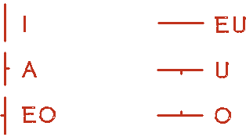
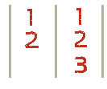
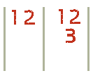
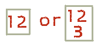
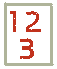
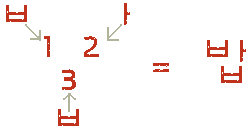

For now, don’t even think about words or grammar or anything until you can read and pronounce Korean letters and syllables. Without being able to read Korean, it is very difficult to continue studying other parts of the language.
In the Unit 0 lessons I will provide the Romanized equivalents to the Korean alphabet. However, I highly suggest that once you know how to read the Korean alphabet, you should completely abandon the Romanizations. For example, in the future, instead of studying like this:
You should study like this:
At any rate, study these characters like crazy. Memorizing them at first is hard, but it needs to be done. Luckily, Korean has a fairly simple ‘alphabet’, although it seems strange to most English speakers at first because it is completely different than English.
ㄱ ㄲ ㄴ ㄷ ㄸ ㄹ ㅁ ㅂ ㅃ ㅅ ㅆ ㅇ ㅈ ㅉ ㅊ ㅋ ㅌ ㅍ ㅎ
ㅏ ㅐ ㅑ ㅒ ㅓ ㅔ ㅕ ㅖ ㅗ ㅘ ㅙ ㅚ ㅛ ㅜ ㅝ ㅞ ㅟ ㅠ ㅡ ㅢ ㅣ
I talk about the names of these letters in this lesson.
The following are the first set of Korean consonants that you need to get into your brain. There is no easy way to explain them, you just need to memorize them:
*(This sound is very difficult to write in English, and is the reason why people from Korea/Japan have trouble pronouncing the R and L sound in Engrish. The sound of this letter (to me) is half way between an R and L. For example, if you were to say “I hadda good time last night” the ㄹ sound is very similar to the “dd” in the slang “hadda.” It’s not quite an R, and it’s not quite an L.)
I want to say one incredibly important thing before you continue. People constantly ask me about the pronunciation of Korean letters, and how they can be best represented using English (Latin) characters. There is no perfect way to represent Korean characters using English letters (or sounds). The English letters presented above are the letters that you will commonly find being used to represent their respective Korean letters. While it is helpful (at first) to memorize the general sound of a Korean letter by using the English letter – you have to remember that Korean sounds are vastly different than English sounds. Not only are Korean sounds different than English sounds – but English sounds different depending on who is speaking (because of accents). Therefore, there is no perfect way to represent the Korean sounds in English.
For example, you will often see:
“K” and “G” used to represent “ㄱ.”
Or “D” and “T” to represent “ㄷ”
Or “R” and “L” to represent “ㄹ”
Truth is, none of those letters matches perfectly with the sound of their respective Korean letter. The only way to know exactly how a Korean letter sounds is to listen to it. Trying to represent it with an English letter (whose pronunciation could change based on the person speaking) doesn’t work. Throughout our lessons (not just in this Unit, but in future Units as well), you will find thousands of audio files attached to vocabulary, letters and example sentences. The best thing you can do is listen to those audio recordings as much as possible to train your ear to the correct sounds.
Anyways, memorize the English equivalents of the characters to help you at this stage, but try not to think that the sounds are exactly the same.
Next are the basic vowels you will need to know. Again, do whatever you can to memorize the English representations to help you learn them.
You should notice that the first three vowels are drawn vertically, and the bottom three are drawn horizontally. If you can’t see what I mean, look at the following picture for a more exaggerated depiction.

In that picture, it should be clear that the ones on the left are drawn vertically, and the ones on the right are drawn horizontally. The difference is very important because the way every Korean letter is written depends on if the vowel is drawn vertically or horizontally.Let’s take a look at how it is done.
Korean is written into “blocks” that make up one syllable. One block always has exactly one syllable. The blocks are ALWAYS drawn in one of the following ways:
1. Number “2” is ALWAYS a vowel. Always always always always always.
2. Number “1, 3 (and sometimes 4) are ALWAYS consonants. Always.
3. Blocks containing a horizontally drawn vowel are always drawn in one of these two ways:

4. Blocks containing a vertically drawn vowel are always drawn in one of these two ways:
Now that you know those rules, it is just a matter of putting the consonants and vowels together to make blocks. For example, if I want to write “bab”:
Step 1: Determine if the vowel is horizontal or vertical. a (ㅏ) is vertical, so we will use:

Step 2: Determine if the syllable ends in a consonant. Yes, it does. So we need to fill 1, 2 and 3, so we need to use:
Step 3: Place the starting letter “b (ㅂ)”, the middle letter “a (ㅏ)” and the ending letter “b (ㅂ)” into 1, 2, and 3 respectively.
Let’s practice a few before we finish:
ㅏ is vertically aligned, so if we make a syllable we would write: 간 (kan)
ㅓ is vertically aligned, so if we make a syllable we would write: 법 (beob)
ㅜ is horizontally aligned, so if we make a syllable we would write: 주 (ju)
ㅗ is horizontally aligned, so if we make a syllable we would write: 호 (ho)
The following tables show all of the letters presented in this lesson, and how they match up to create syllables.
The first table only shows syllables created without the use of a final consonant. By factoring in the use of a final consonant, many more varieties of syllables can be created, and those will be presented a little bit lower.
Click the letters on the left of the table to hear how a specific consonant is pronounced with each vowel. When listening to these sounds, try to understand where some of the ambiguity comes from when trying to represent these consonant sounds with English (Latin) letters. I often get questions from learners who are confused whether to use “G” or “K” to represent “ㄱ.” Listen to the “ㄱ” column and tell me which letter best represents that sound in all cases. You can’t. This is why there is confusion amongst early learners of Korean in terms of the correct pronunciation of letters. The same can be said for other letters, like “B” and “P” with “ㅂ” and “R” and “L” with “ㄹ.”
You can also click the letters at the top of the table to hear how a specific vowel is pronounced with each consonant. Again, try to recognize the sound that the Korean vowel is supposed to make. Using an English (Latin) vowel to represent the sound of a Korean vowel is impossible because the pronunciation of our English vowels change from word to word, and from person to person (depending on accents).
It is best to abandon all English/Latin representations of Korean sounds, as it just adds to confusion. I highly recommend that you use these recordings (and the thousands of other recordings in our Lessons) to familiarize yourself with the correct pronunciation of a Korean letter or word. It may be difficult at first, but it is well worth it in the long run.
| ㅣ | ㅏ | ㅓ | ㅡ | ㅜ | ㅗ | |
| ㅂ | 비 | 바 | 버 | 브 | 부 | 보 |
| ㅈ | 지 | 자 | 저 | 즈 | 주 | 조 |
| ㄷ | 디 | 다 | 더 | 드 | 두 | 도 |
| ㄱ | 기 | 가 | 거 | 그 | 구 | 고 |
| ㅅ | 시 | 사 | 서 | 스 | 수 | 소 |
| ㅁ | 미 | 마 | 머 | 므 | 무 | 모 |
| ㄴ | 니 | 나 | 너 | 느 | 누 | 노 |
| ㅎ | 히 | 하 | 허 | 흐 | 후 | 호 |
| ㄹ | 리 | 라 | 러 | 르 | 루 | 로 |
When looking at this table, it is important to note how each vowel pairs up with a consonant. I am showing you this table (and the ones that follow) to allow you to get familiar with the structure of a Korean syllable. Note that these constructions are not necessarily words, and that it usually takes more than one syllable to make a word.
The following nine tables are similar to the table presented above. However, in each table, one specific consonant is being used as the final consonant of the syllable. Again, I am showing you these tables to allow you to familiarize yourself with the variety of constructions that could be made with the letters you learned today. You should specifically look for the patterns that exist for every letter. You do not, by any means, need to memorize any of these constructions – as that will come naturally as you progress through your study of Korean.
Also note that while some of the syllables shown in the tables below are very common, some you will never find in any word in Korean. Notice that some of the syllables in the table are colored gray. You will probably never find that syllable in any Korean word, ever. The one’s in black are syllables that you will see within words. The colored/underlined syllables are actually words on their own. If you hover your mouse over these words, you will see the translation in English. I have done this only for convenience, and you do not need to memorize any of this at this point.
Final Consonant: ㅂ
| ㅣ | ㅏ | ㅓ | ㅡ | ㅜ | ㅗ | |
| ㅂ | 빕 | 밥 | 법 | 븝 | 붑 | 봅 |
| ㅈ | 집 | 잡 | 접 | 즙 | 줍 | 좁 |
| ㄷ | 딥 | 답 | 덥 | 듭 | 둡 | 돕 |
| ㄱ | 깁 | 갑 | 겁 | 급 | 굽 | 곱 |
| ㅅ | 십 | 삽 | 섭 | 습 | 숩 | 솝 |
| ㅁ | 밉 | 맙 | 멉 | 믑 | 뭅 | 몹 |
| ㄴ | 닙 | 납 | 넙 | 늡 | 눕 | 놉 |
| ㅎ | 힙 | 합 | 헙 | 흡 | 훕 | 홉 |
| ㄹ | 립 | 랍 | 럽 | 릅 | 룹 | 롭 |
Final Consonant: ㅈ
| ㅣ | ㅏ | ㅓ | ㅡ | ㅜ | ㅗ | |
| ㅂ | 빚 | 밪 | 벚 | 븢 | 붖 | 봊 |
| ㅈ | 짖 | 잦 | 젖 | 즞 | 줒 | 좆 |
| ㄷ | 딪 | 닺 | 덪 | 듲 | 둦 | 돚 |
| ㄱ | 깆 | 갖 | 겆 | 긎 | 궂 | 곶 |
| ㅅ | 싲 | 샂 | 섲 | 슺 | 숮 | 솢 |
| ㅁ | 밎 | 맞 | 멎 | 믖 | 뭊 | 몾 |
| ㄴ | 닞 | 낮 | 넞 | 늦 | 눚 | 놎 |
| ㅎ | 힞 | 핮 | 헞 | 흦 | 훚 | 홎 |
| ㄹ | 맂 | 랒 | 렂 | 릊 | 룾 | 롲 |
Final Consonant: ㄷ
| ㅣ | ㅏ | ㅓ | ㅡ | ㅜ | ㅗ | |
| ㅂ | 빋 | 받 | 벋 | 븓 | 붇 | 볻 |
| ㅈ | 짇 | 잗 | 젇 | 즏 | 줃 | 졷 |
| ㄷ | 딛 | 닫 | 덛 | 듣 | 둗 | 돋 |
| ㄱ | 긷 | 갇 | 걷 | 귿 | 굳 | 곧 |
| ㅅ | 싣 | 삳 | 섣 | 슫 | 숟 | 솓 |
| ㅁ | 믿 | 맏 | 먿 | 믇 | 묻 | 몯 |
| ㄴ | 닏 | 낟 | 넏 | 늗 | 눋 | 녿 |
| ㅎ | 힏 | 핟 | 헏 | 흗 | 훋 | 혿 |
| ㄹ | 릳 | 랃 | 럳 | 륻 | 룯 | 롣 |
Final Consonant: ㄱ
| ㅣ | ㅏ | ㅓ | ㅡ | ㅜ | ㅗ | |
| ㅂ | 빅 | 박 | 벅 | 븍 | 북 | 복 |
| ㅈ | 직 | 작 | 적 | 즉 | 죽 | 족 |
| ㄷ | 딕 | 닥 | 덕 | 득 | 둑 | 독 |
| ㄱ | 긱 | 각 | 걱 | 극 | 국 | 곡 |
| ㅅ | 식 | 삭 | 석 | 슥 | 숙 | 속 |
| ㅁ | 믹 | 막 | 먹 | 믁 | 묵 | 목 |
| ㄴ | 닉 | 낙 | 넉 | 늑 | 눅 | 녹 |
| ㅎ | 힉 | 학 | 헉 | 흑 | 훅 | 혹 |
| ㄹ | 릭 | 락 | 럭 | 륵 | 룩 | 록 |
Final Consonant: ㅅ
| ㅣ | ㅏ | ㅓ | ㅡ | ㅜ | ㅗ | |
| ㅂ | 빗 | 밧 | 벗 | 븟 | 붓 | 봇 |
| ㅈ | 짓 | 잣 | 젓 | 즛 | 줏 | 좃 |
| ㄷ | 딧 | 닷 | 덧 | 듯 | 둣 | 돗 |
| ㄱ | 깃 | 갓 | 것 | 긋 | 굿 | 곳 |
| ㅅ | 싯 | 삿 | 섯 | 슷 | 숫 | 솟 |
| ㅁ | 밋 | 맛 | 멋 | 믓 | 뭇 | 못 |
| ㄴ | 닛 | 낫 | 넛 | 늣 | 눗 | 놋 |
| ㅎ | 힛 | 핫 | 헛 | 흣 | 훗 | 홋 |
| ㄹ | 릿 | 랏 | 럿 | 릇 | 룻 | 롯 |
Final Consonant: ㅁ
| ㅣ | ㅏ | ㅓ | ㅡ | ㅜ | ㅗ | |
| ㅂ | 빔 | 밤 | 범 | 븜 | 붐 | 봄 |
| ㅈ | 짐 | 잠 | 점 | 즘 | 줌 | 좀 |
| ㄷ | 딤 | 담 | 덤 | 듬 | 둠 | 돔 |
| ㄱ | 김 | 감 | 검 | 금 | 굼 | 곰 |
| ㅅ | 심 | 삼 | 섬 | 슴 | 숨 | 솜 |
| ㅁ | 밈 | 맘 | 멈 | 믐 | 뭄 | 몸 |
| ㄴ | 님 | 남 | 넘 | 늠 | 눔 | 놈 |
| ㅎ | 힘 | 함 | 험 | 흠 | 훔 | 홈 |
| ㄹ | 림 | 람 | 럼 | 름 | 룸 | 롬 |
Final Consonant: ㄴ
| ㅣ | ㅏ | ㅓ | ㅡ | ㅜ | ㅗ | |
| ㅂ | 빈 | 반 | 번 | 븐 | 분 | 본 |
| ㅈ | 진 | 잔 | 전 | 즌 | 준 | 존 |
| ㄷ | 딘 | 단 | 던 | 든 | 둔 | 돈 |
| ㄱ | 긴 | 간 | 건 | 근 | 군 | 곤 |
| ㅅ | 신 | 산 | 선 | 슨 | 순 | 손 |
| ㅁ | 민 | 만 | 먼 | 믄 | 문 | 몬 |
| ㄴ | 닌 | 난 | 넌 | 는 | 눈 | 논 |
| ㅎ | 힌 | 한 | 헌 | 흔 | 훈 | 혼 |
| ㄹ | 린 | 란 | 런 | 른 | 룬 | 론 |
Final Consonant: ㅎ
| ㅣ | ㅏ | ㅓ | ㅡ | ㅜ | ㅗ | |
| ㅂ | 빟 | 밯 | 벟 | 븧 | 붛 | 봏 |
| ㅈ | 짛 | 잫 | 젛 | 즣 | 줗 | 좋 |
| ㄷ | 딯 | 닿 | 덯 | 듷 | 둫 | 돟 |
| ㄱ | 깋 | 갛 | 겋 | 긓 | 궇 | 곻 |
| ㅅ | 싷 | 샇 | 섷 | 슿 | 숳 | 솧 |
| ㅁ | 밓 | 맣 | 멓 | 믛 | 뭏 | 뫃 |
| ㄴ | 닣 | 낳 | 넣 | 늫 | 눟 | 놓 |
| ㅎ | 힣 | 핳 | 헣 | 흫 | 훟 | 홓 |
| ㄹ | 맇 | 랗 | 렇 | 릏 | 뤃 | 롷 |
Final Consonant: ㄹ
| ㅣ | ㅏ | ㅓ | ㅡ | ㅜ | ㅗ | |
| ㅂ | 빌 | 발 | 벌 | 블 | 불 | 볼 |
| ㅈ | 질 | 잘 | 절 | 즐 | 줄 | 졸 |
| ㄷ | 딜 | 달 | 덜 | 들 | 둘 | 돌 |
| ㄱ | 길 | 갈 | 걸 | 글 | 굴 | 골 |
| ㅅ | 실 | 살 | 설 | 슬 | 술 | 솔 |
| ㅁ | 밀 | 말 | 멀 | 믈 | 물 | 몰 |
| ㄴ | 닐 | 날 | 널 | 늘 | 눌 | 놀 |
| ㅎ | 힐 | 할 | 헐 | 흘 | 훌 | 홀 |
| ㄹ | 릴 | 랄 | 럴 | 를 | 룰 | 롤 |
- Recognize the vowels and consonants that were taught in this lesson
- Be able to make syllables by putting together formations of vowels and consonants
Want to try to create some words using the letters introduced in this lesson?
The Korean words are taken from Unit 1: Lesson 1
Round 1 | Round 2
The Korean words are taken from Unit 1: Lesson 2
Round 1 | Round 2 | Round 3